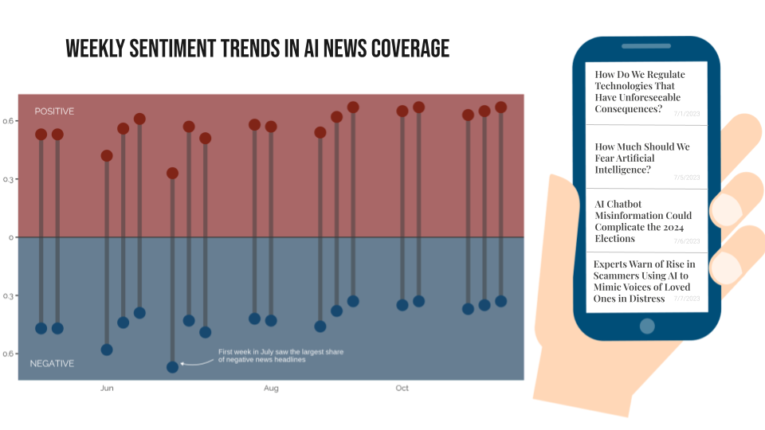
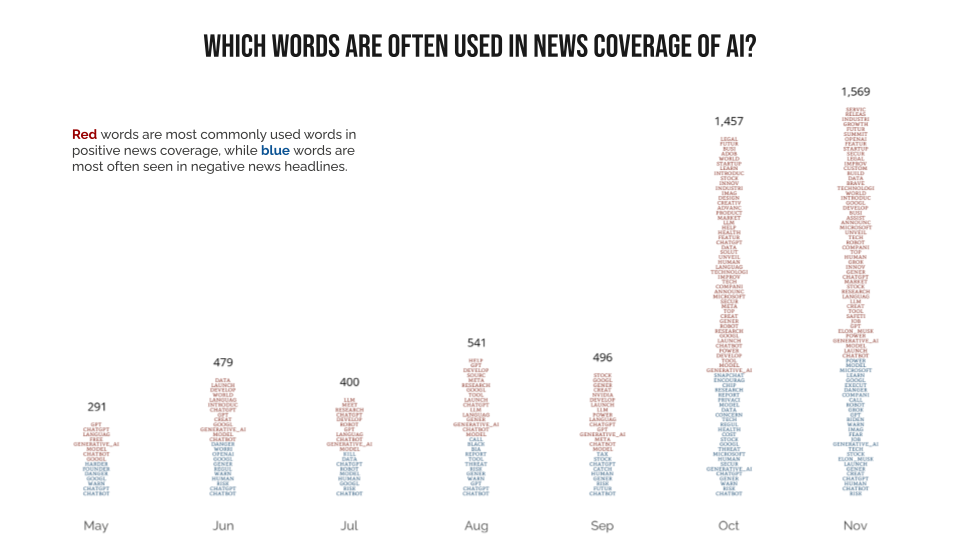
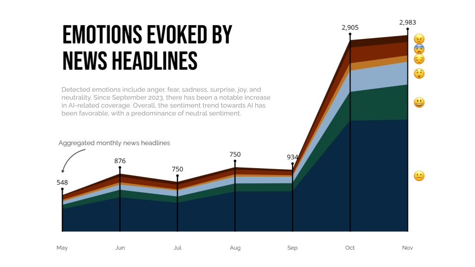
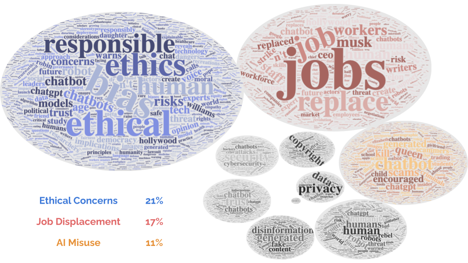
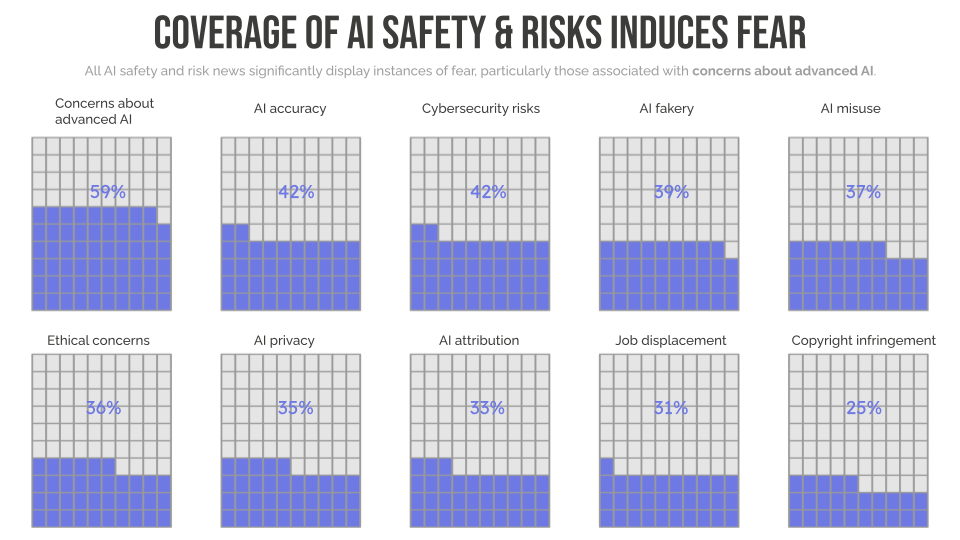
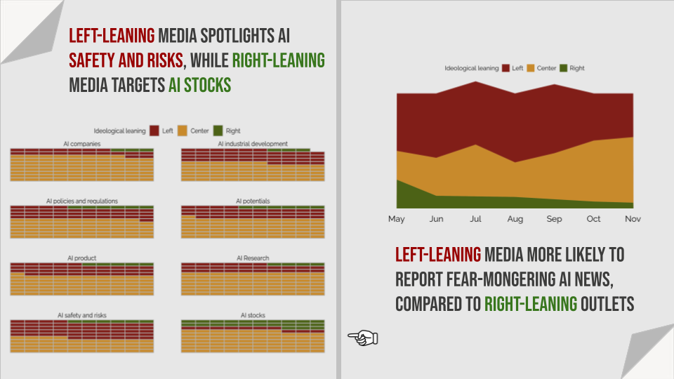
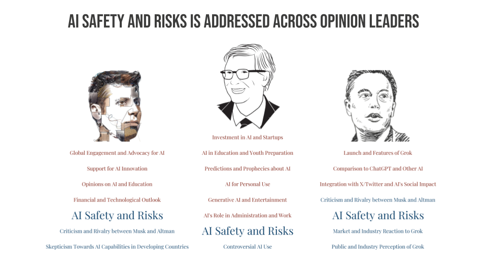
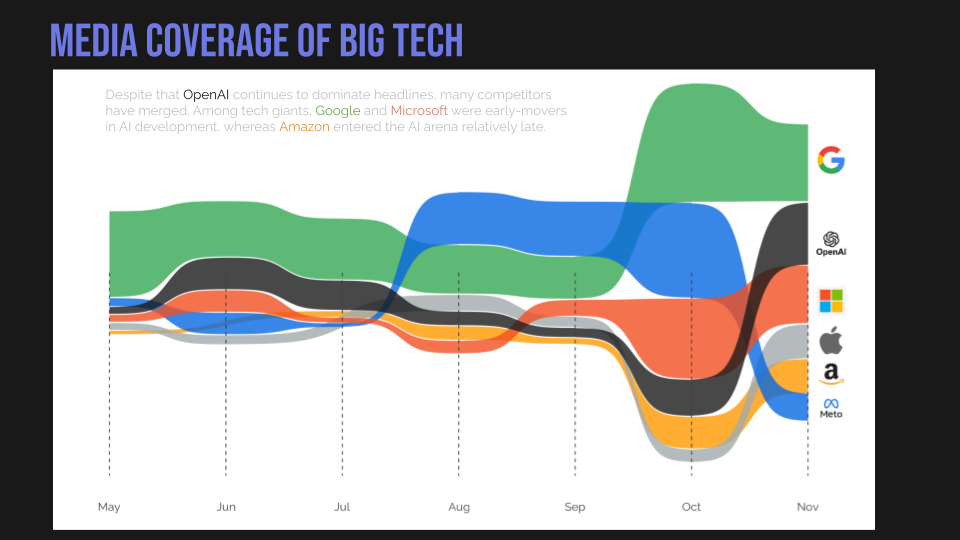
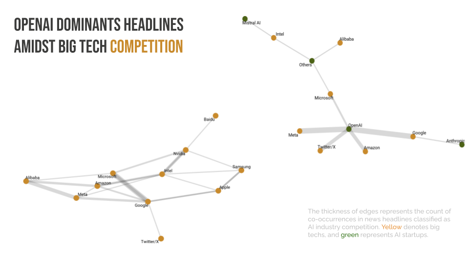
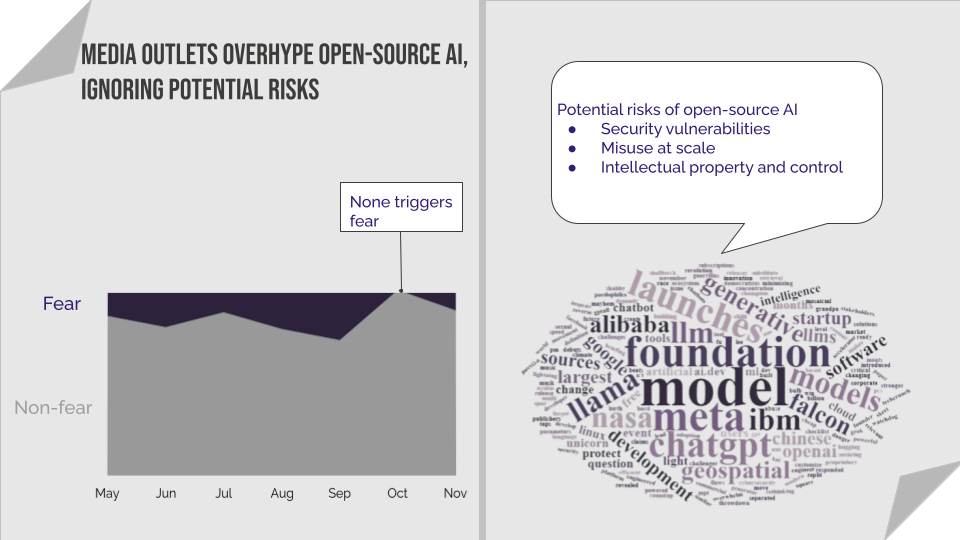

Artificial intelligence is not a substitute for human intelligence; it is a tool to amplify human creativity and ingenuity. — Fei-Fei Li
How do media outlets approach discussions about AI? What sentiments and emotions do these stories tend to evoke? Here are my takeaways from analyzing 10,000 AI-related news headlines from May to November 2023.
1. Balanced Coverage on the Benefits and Risks of AI

AI media coverage has generally struck a balance between positive and negative perspectives. However, a notable surge in negative sentiment occurred during the first week of July, driven by growing concerns about misinformation and ethical issues.
2. Growing Concerns about Generative AI

The term “generative AI” originally appeared in headlines with predominantly positive connotations. However, it has started to emerge in negatively charged news stories over time, reflecting a growing focus on the potential drawbacks and risks associated with generative AI.
3. Overall Favorable and Neutral Outlook on AI

A noticeable rise in AI-related coverage has occurred since September 2023. Overall, the sentiment indicates a favorable attitude, with a predominance of neutral sentiment.
4. Ethics, Job Loss, and AI Misuse are Top Concerns in AI Safety News

The relative sizes of the word clouds indicate the corresponding percentages of each topic. Ethical issues, job displacement, and AI misuse are the top three focuses among media outlets reporting on AI safety and risks. Other topics include concerns about advanced AI, AI privacy, copyright infringement, cybersecurity risks, AI-generated fakes, and AI accuracy.
5. Advanced AI Tops Fear-Inducing News Stories Among AI Safety News

Although all subtopics within AI safety and risks contain instances of fear, concerns about advanced AI account for the largest share of fear-inducing news stories.
6. Left-Leaning Media Adopt a More Cautious Stance on AI

The graph on the left illustrates the proportion of AI-related news headlines across eight dominant themes by media leanings. Left-leaning outlets tend to focus more on safety and risk topics, adopting a cautious perspective. In contrast, right-leaning media emphasize AI stocks, suggesting a more pragmatic or neutral attitude toward AI.
The graph on the right analyzes the trend of fear-mongering headlines over time among media with varying ideological leanings. The majority of these fear-inducing headlines come from left-leaning outlets.
7. AI Leaders Express Safety Concerns but Maintain Positive Outlook
 The graph examines key topics related to prominent AI figures, including Sam Altman, Bill Gates, and Elon Musk. While all three have voiced concerns about AI safety and risks, the majority still maintain a positive outlook toward AI.
8. OpenAI Leads AI Coverage, with Google and Microsoft Among Early Adopters

Tech companies also play a key role in shaping AI coverage. Open AI continues to capture media spotlight, but numerous competitors have emerged. Among tech giants, Google and Microsoft have been early adopters in AI development, while Amazon entered the AI field at a later stage.
9. Big Tech Dominates AI Competition, While OpenAI Leads Among Startups
 The majority of news stories related to AI competition involve big tech companies. In the smaller segment focusing on startups, OpenAI is at the center of competition narratives.
10. Open-Source AI Hype Persists Despite Early Concerns Over Security and Misuse

There’s been consistent hype surrounding open-source AI. Initially, news about open-source AI could trigger fear, but this cautionary coverage has decreased over time. The smaller portion of news stories that raises concerns about open-source AI focuses on potential risks like security vulnerabilities, large-scale misuse, and worries about intellectual property and control.